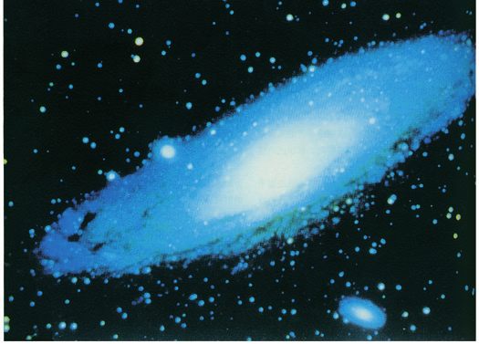
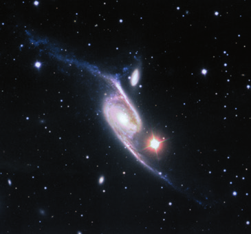

教材文本 · 实用类文本阅读
宇宙的边疆
宇宙的辽阔使人认识自身的有限，科学探索又使人类有可能增长认识、珍视地球并思考共同命运。
导读
文体与题材：科普作品；通过想象中的空间旅行介绍宇宙及人类的位置。
作者简介：卡尔·萨根（1934—1996），美国天文学家、科普作家，著有《宇宙》等作品，致力于向公众讲解科学探索及其意义。
文本出处：选自《宇宙》第一章，吉林人民出版社1998年版，周秋麟、吴依俤等译，教材略有改动。篇首保留帕斯卡尔和托马斯·亨利·赫胥黎的引言。
内容脉络：篇首引言提出认识世界和继续探索的责任，正文从人类求知谈起，再由星系际空间进入本星系群、银河系与太阳系，最终回到地球，思考人类的处境和探索意义。
内容主旨：宇宙的辽阔使人认识自身的有限，科学探索又使人类有可能增长认识、珍视地球并思考共同命运。
阅读重点：追踪虚拟旅行的空间顺序，辨别知识陈述、数值估计与探索设想，分析比喻、设问及人称如何帮助科普表达。
原文与随文研读
原文按结构分节；随文内容可定位至对应段落。
引言：以两则题辞提出认识世界与继续探索的责任。
我索取荣誉的对象不应该是太空，而应该是我的灵魂。假如我拥有一切，我就无所用心。好大喜功则为宇宙汪洋所吞没，开动脑筋则领悟世界。
已知的事物是有限的，未知的事物是无穷的；我站立在茫茫无边神秘莫测的汪洋中的一个小岛上。继续开拓是我们每一代人的职责。
注释 2
帕斯卡尔（1623—1662）
帕斯卡尔〔帕斯卡尔（1623—1662）〕法国数学家、物理学家、哲学家。
托马斯·亨利·赫胥黎（1825—1895）
托马斯·亨利·赫胥黎〔托马斯·亨利·赫胥黎（1825—1895）〕英国博物学家、科学家。主要著作有《人在自然界中的地位》《进化论与伦理学》等。
认识起点：将人类的有限处境与怀疑、想象联系起来。
宇宙的大小和年龄不是一般人所能理解的，我们的小小行星只不过是无限永恒的时空中的一个有限世界。从宏观来看，人类所关心的大多数问题都可以说是无关紧要的，甚至是微不足道的。但是，我们人类朝气蓬勃，勇敢好学，前途无量。几千年来，我们对宇宙及我们在宇宙中所处的地位作出了最惊人的和出乎意料的发现。人类对宇宙的探索，回想起来是很令人兴奋的。这些探索活动提醒我们：好奇是人类的天性，理解是一种乐趣，知识是生存的先决条件。因为我们在这个宇宙中只不过是晨空中飞扬的一粒尘埃，所以，我们认为，人类的未来取决于我们对这个宇宙的了解程度。
我们探索宇宙的时候，既要勇于怀疑，又要富于想象。想象经常能够把我们带领到崭新的境界，没有想象，我们就到处碰壁。怀疑可以使我们摆脱幻想，还可以检验我们的推测。宇宙神秘非常，它有典雅的事实，错综的关系，微妙的机制。
注释 · 批注 2
作品来源
宇宙现在是这样选自《宇宙》第一章（吉林人民出版社1998年版）。周秋麟、吴依俤（dì）等译。略有改动。卡尔·萨根（1934—1996），美国天文学家、科普作家。
认识与空间的双重起点
地球的表面就是宇宙汪洋之滨“汪洋”把宇宙的广阔与人类已知领域的有限联系起来。“脚趾”“踝节”进一步表示探索程度，随后正文的空间旅行承接这一比喻。
宇宙尺度：以光年和星系的数量呈现空间的辽阔。
因为宇宙辽阔无垠，所以那些我们所熟悉的适用于地球的量度单位——米、英里等已经没有意义。我们用光速来量度距离。一束光每秒钟传播18.6万英里，约30万千米，也就是7倍于地球的周长。一束光从太阳传播到地球用8分钟的时间，因此我们可以说，太阳离我们8光分。一束光在一年之内约穿过10万亿千米（相当于6万亿英里）的空间，这个长度单位——光在一年里所通过的距离——称为1光年。光年不是度量时间的单位，而是度量距离的极大单位。
地球是宇宙中的一个地方，但决不是唯一的地方，也不是一个典型的地方。任何行星、恒星或星系都不可能是典型的，因为宇宙中的大部分是空的。唯一典型的地方在广袤、寒冷的宇宙真空之中，在星际空间永恒的黑夜里。那是一个奇特而荒芜的地方。相比之下，行星、恒星和星系就显得特别稀罕而珍贵。假如我们被随意搁置在宇宙之中，我们附着或旁落在一个行星上的机会只有10³³分之一（10³³，在1之后接33个0）。在日常生活当中，这样的机会是“令人羡慕的”。可见天体是多么宝贵。
从一个星系际的优越地位上，我们可以看到无数模糊纤细的光须像海水的泡沫一样遍布在空间的浪涛上，这些光须就是星系。其中有些是孤独的徘徊者，大部分则群集在一起，挤作一团，在大宇宙的黑夜里不停地飘荡。展现在我们面前的就是我们所见到的极其宏伟壮观的宇宙。我们隶属于这些星云，我们所见到的星云离地球80亿光年，处在已知宇宙的中心。
星系是由气体、尘埃和恒星群（上千亿个恒星）组成的，每个恒星对某人来说都可能是一个太阳。在星系里有恒星、行星，也可能有生物、智能生命和宇宙间的文明。但是从远处着眼，星系更多地使人想起一堆动人的发现物——贝壳，或许是珊瑚——大自然在宇宙的汪洋里创造的永恒的产物。
宇宙间有若干千亿（10¹¹）个星系。每个星系平均由1000亿个恒星组成。在所有星系里，行星的数量跟恒星的总数大概一样多，即10¹¹×10¹¹=10²²，在这样庞大的数量里，难道只有一个普通的恒星——太阳——是被有人居住的行星伴随着吗？为什么我们这些隐藏在宇宙中某个被遗忘角落里的人类就这样幸运呢？我认为，宇宙里很可能到处都充满着生命，只是我们人类尚未发现而已。我们的探索才刚刚开始。80亿光年以外嵌着银河系的星系团催迫着我们去探索，探索太阳和地球就更不用说了。我们确信，有人居住的这个行星只不过是一丁点儿的岩石和金属，它靠着反射太阳光而发出微光。在这样的大距离里，它已经消失得无影无踪。

札记 2
光年与速度
我们用光速来量度距离此处随后用传播速度乘以传播时间解释距离。“光年”指光在一年内传播的距离，是长度单位；光速本身仍是速度。“没有意义”强调米、英里用于巨大宇宙尺度不便，并非这些单位失效。
估计与设想的读法
我认为，宇宙里很可能到处都充满着生命“我认为”“很可能”显示此处的判断性质。先区分天体数量估计、可能存在生命与已发现生命，再整理支持探索的理由。NASA的地外生命探索说明指出，尚无地球之外生命的确证。
进入银河：由本星系群推进到恒星与行星世界。
但是，这个时候，我们的旅程只到达地球上的天文学所通称的“本星系群”。本星系群宽达数百万光年，大约由20个子星系组成，是一个稀疏、模糊而又实实在在的星系团。其中的一个星系是M31，从地球上看，这个星系位于仙女星座。跟其他旋涡星系一样，它是一个由恒星、气体和尘埃组成的巨大火轮。M31有两个伴侣，它通过引力——跟使我待在座椅上相同的物理学定律——将矮椭圆星系束缚在一起。整个宇宙中的自然法则都是一样的。我们现在离地球200万光年。
M31以外是另一个非常相似的星系，也就是我们自己的星系。它的旋涡臂缓慢地转动着——每2.5亿年旋转一周。现在，我们离地球4万光年，我们正处于密集的银河中心。但是，假如我们希望找到地球的话，就必须将方向扭转到银河系的边远地带，扭转到接近遥远的旋涡臂边缘的模糊的地方。

我们印象最深刻的是，恒星即使在两个旋臂之间，也像流水一样漂浮在我们的四周——气势磅礴的自身发光的星球，有些虽然像肥皂泡一样脆弱，却又大得可以容得下1万个太阳或1万亿个地球；有些小如一座城池，但密度却比铅大100万亿倍。有些恒星跟太阳一样是孤独的；多数恒星有伴侣，通常是成双成对，互相环绕。但是那些星团不断地从三星系逐渐转化成由数十个恒星组成的松散的星团，再转化成由百万个恒星组成的璀璨夺目的大球状星团。有些双星紧靠在一起，星体物质在它们之间川流不息；多数双星都像木星与太阳一样分离开来。有些恒星——超新星——的亮度跟它们所在的整个星系的亮度一样；有些恒星——黑洞——在几千米以外就看不见了。有些恒星的光彩长年不减；有些恒星闪烁不定，或以匀称的节奏闪烁着。有些恒星稳重端庄地转动着；有些恒星狂热地旋转着，弄得自己面貌全非，成了扁圆形。多数恒星主要是以可见光或红外光放出光芒；其他恒星也是X光或射电波的光源。发蓝光的恒星是年轻的星，会发热；发黄光的恒星是常见的星，它们已经到了中年；发红光的恒星常常是垂亡的老年星；而发白光或黑光的恒星则已奄奄一息。银河里大约有4000亿个各种各样的恒星，它们的运转既复杂又巧妙。对于所有这些恒星，地球上的居民到目前为止比较了解的却只有一个。
每个星系都是太空中的一个岛屿，它们与其邻居隔光年之距遥遥相望。我可以想象，在无数星球上的生物对宇宙的模糊认识是如何产生的：它们在开始的时候都以为，除了它们自己小小的行星以及它们周围的那些区区可数的恒星以外，再也没有其他的星星了。我们是在与世隔绝的情况下成长起来的，我们对宇宙的正确认识是逐渐形成的。
有些恒星可能被数百万个没有生物的由岩石构成的小星球所包围，这些小星球是在它们演化的某个初级阶段冻结而成的行星系。大概许多恒星都有跟我们类似的行星系：在外围具有由大气环所包围的行星和冰冻卫星，而在接近中心处则有温热的、天蓝色的、覆盖着云的小星球。在一些行星上可能已经有高级动物，他们也许正在从事某种巨大的工程建设来改造他们的行星世界，他们是我们宇宙中的兄弟姐妹。他们跟我们的差别很大吗？他们的形状、生物、化学、神经、生态、历史、政治、科学、技术、艺术、音乐、宗教、哲学等方面的情况如何？也许有一天我们会知道的。
注释 5
旋涡星系
旋涡星系〔旋涡星系〕具有旋涡结构的星系。一般有一个很亮的核心部分，又有两条或两条以上的旋臂从核心延伸出来，旋臂中含有光度极大的早型巨星、超巨星和亮星云。我们所在的银河系就是旋涡星系。
矮椭圆星系
矮椭圆星系〔矮椭圆星系〕质量较小的椭圆星系。椭圆星系是呈椭圆形状的星系，具有较均匀的内部结构，包含的恒星年龄较老。
超新星
超新星〔超新星〕爆发时光变突然增到原来的1000万倍以上的爆发性变星。
黑洞
黑洞〔黑洞〕宇宙中一类具有超大质量、超强引力场的天体，其引力强度极高，以至任何物体或辐射都无法从其表面及临近区域逃逸出去。
黑洞的边界
有些恒星——黑洞黑洞自身不发光或反射光，事件视界内光也无法逃逸；人们可通过吸积盘辐射、邻近恒星运动等远距离探测它。“几千米以外就看不见”没有给出适用于黑洞的可见距离界限，黑洞的质量与事件视界尺度也不统一。参见NASA黑洞介绍。
太阳系之旅：从彗核和外部行星逐步接近地球。
我们现在已经回到了我们的后院——离地球1光年的地方。包围着我们的太阳的是一群巨大的雪球，这些雪球由冰块、岩石和有机分子组成：它们就是彗核。每当恒星经过的时候都对它们产生一定的引力作用，最后迫使它们当中的一个雪球倾倒到内太阳系。由于太阳热的作用，冰块被蒸发，于是就出现了美丽的彗尾。
我们现在来到我们星系的行星上。这些星球相当之大，它们都是太阳的俘获物。由于重力作用，它们被迫做近似圆周的运动。它们的热量主要来自太阳。冥王星覆盖着甲烷冰，巨大卫星卡戎是它的伙伴之一。冥王星是被太阳照亮的，因为太阳离它很远，从漆黑的天空中看上去，太阳只不过是一个明亮的光点。巨大的气体星球海王星、天王星、土星——太阳系的宝石——和木星都分别有一个冰冻卫星做伴相随。在气体行星及其冰冻卫星的内侧就是充满岩石的温暖的内太阳系。例如，在那里有红色行星——火星。在火星上有高耸的火山、巨大的裂谷、席卷火星的大沙暴，并且，完全可能还有一些初级形态的生物。所有太阳系的行星都绕着太阳运转。太阳是离我们最近的一个恒星，它是一个令人恐怖的氢气和氦气的热核反应堆，它的强光照耀着整个太阳系。
注释 4
冥王星
冥王星覆盖着甲烷冰〔冥王星〕1930年美国天文学家汤博发现冥王星后，冥王星被列为第九大行星。2006年8月24日，国际天文学联合大会投票决定，不再将冥王星视为行星，而将其列入“矮行星”。
卡戎
巨大卫星卡戎〔卡戎〕即“冥卫一”，长期以来科学界将其视为冥王星的最大卫星。
巨大的气体星球……做伴相随
巨大的气体星球海王星、天王星、土星〔巨大的气体星球……做伴相随〕这些行星均已被发现有更多的卫星甚至卫星群相伴随。
天文学史中的表述
冥王星覆盖着甲烷冰文中的行星分类和某些估计反映作品写作时的认识。2006年国际天文学联合会将冥王星归为矮行星；教材已给出这一原注，可参阅NASA冥王星介绍。
回到家园：在宇宙尺度中认识地球与人类的意义。
经过一番漫游之后，我们终于回到了我们这个弱小的浅蓝色星球。宇宙汪洋茫无际涯，范围之大，难以想象，而这个星球仅是其中之一，完全淹没于宇宙汪洋之中，它的存在可能仅仅对我们有意义。地球是我们的家，我们的母亲，人类是在这里诞生和成长的，是在这里成熟起来的。正是在这个星球上，我们激发了探索宇宙的热情；也是在这里，我们正在痛苦和不安之中掌握我们自己的命运。
人类有幸来到地球这个行星上。这里有充满氧气的蓝天，有碧波荡漾的海洋，有凉爽的森林，还有柔软的草地。这无疑是一个生机勃勃的星球。从整个宇宙来看，它不但景色迷人，天下稀有，而且到目前为止，在我们的行程所经历过的所有时空当中，只有这个行星上的人类开始对宇宙进行探索。必定有许多这样的星球散布在整个宇宙空间里，但是，我们对它们的探索从这里开始。我们有人类百万年来用巨大的代价积累起来的丰富知识。我们这个世界人才济济，人们勤学好问。我们的时代以知识为荣，我们是很幸运的。人类是宇宙的产物，现在暂时居住在叫作“地球”的星球上。人类返回家园的长途旅行已经开始。
评议 1
地球意义的观察尺度
它的存在可能仅仅对我们有意义前句从宇宙空间比较地球的微小，后句转向人类生命与认识的家园。尺度变化使“渺小”与“重要”能够并存，结尾由知识介绍进入责任思考。
科学文本研读
先明确作者所讨论的问题和关键概念，再将观察材料、解释机制与结论逐项对应。对历史科学文献，记录写作时代、概念范围和判断语气；拓展阅读使用相关学科资料，注明证据与结论的适用条件。
- 圈定待解释现象和基本概念，列出它们之间的关系。
- 区分观察记录、概括、推测和价值判断，逐项找回对应语句。
- 恢复主要推理及必要前提，比较不同解释面对同一材料的效果。
- 写一则200字左右的提要，保留核心观点、主要根据和必要限定；再与原文核对。
科学论著与科普表达
对读另一篇科学选文，比较《自然选择的证明》怎样由事实、理论和竞争解释组织论证，《宇宙的边疆》怎样由空间旅行组织知识并引导探索。
- 两文各选一处概念说明，记录术语、定义和必要限定。
- 比较达尔文的条件句、因果长句与萨根的比喻、设问，分别说明专业论证和面向公众讲解的表达需要。
- 各写一则提要，再说明两文在表达方式、语言风格和读者预备知识上的异同。
研读题
围绕原文的语言、篇章关系及论述或叙事内容研读，结合具体语句说明判断和理由。
第1题 · 空间顺序
文章的虚拟宇宙旅行按怎样的顺序展开？这种顺序有何作用？
参考答案1展开 / 收起
参考作答
- 由远到近：正文由星系际空间进入本星系群，再进入银河系，并将方向转向银河边缘。
- 由外到内：旅行进入太阳附近的彗核区域和太阳系行星，由外部行星转入温暖的内太阳系。
- 以家园收束：结尾回到地球，将空间上的微小同人类诞生、成长和探索的起点联系起来。
审题与考查点
恢复各级空间位置及其与末尾地球认识的关系。
文本分析
由远到近查看证据 ↗
文本依据：“从一个星系际的优越地位上”；“我们自己的星系”。
星系际观察确立宏观尺度，“本星系群”和“我们自己的星系”缩小范围，空间层级为庞杂知识提供有序位置。
由外到内查看证据 ↗
文本依据：“离地球1光年的地方”；“在气体行星及其冰冻卫星的内侧”。
“离地球1光年”和“在……内侧”继续限定位置，宇宙知识随视点移动渐次展开，读者能把不同天体放入同一空间序列。
以家园收束查看证据 ↗
文本依据：“经过一番漫游之后，我们终于回到了我们这个弱小的浅蓝色星球。”；“我们对它们的探索从这里开始”。
顺序使读者先见辽阔宇宙，再重新理解熟悉的家园；最后的价值思考由前文的尺度比较和空间返回获得依据。
知识点
语篇的宏观结构：语篇的宏观结构是跨越局部句子的总体意义组织，包括中心问题、主要内容层次及其相互关系。它帮助读者把分散信息理解为一个整体；主题分析：主题是作品通过人物、事件、形象和表达方式所形成的主要意义倾向。主题分析须说明作品围绕什么问题展开，以及怎样理解和评价这个问题。
解题方法
依空间标记列位置，区别星系群、星系、太阳系和行星，再解释最后回到地球的认识意义。
易误辨析
将旅行当作作者实际搭乘飞船的经历会误判文本方式；空间名称也不能混用。
答案组织与检核
三点应列明层级和方向，并说明知识组织及结尾价值；作用与具体顺序相对应。
第2题 · 比喻作用
“宇宙汪洋”“太空中的一个岛屿”“我们的后院”等比喻怎样帮助读者理解宇宙？
参考答案2展开 / 收起
参考作答
- 表现尺度与探索：“汪洋”和涉水把宇宙广大、人类认识有限及初步探索转化为可想象的经验。
- 表现分布关系：星系比作岛屿、光须比作泡沫，突出广阔空间中的离散天体及其可见形态。
- 使空间接近可感：“后院”将相对邻近的太阳周围区域纳入人的居住经验，为回到地球的家园表述作准备。
审题与考查点
先明确本体、喻体及对应属性，再解释比喻在讲述中的作用。
文本分析
表现尺度与探索查看证据 ↗
文本依据：“宇宙汪洋之滨”；“海水才刚刚没及我们的脚趾”。
大海与刚涉水的身体部位对应整体与已涉足范围，帮助非专业读者把抽象尺度与认识程度联系起来。
表现分布关系查看证据 ↗
文本依据：“每个星系都是太空中的一个岛屿”；“光须像海水的泡沫一样遍布在空间的浪涛上”。
相似点是分布、相隔距离或光的形态。解释时应分别指出对应属性，岛屿比喻不提供星系成因的科学机制。
使空间接近可感查看证据 ↗
文本依据：“我们现在已经回到了我们的后院”；“地球是我们的家，我们的母亲”。
比喻随旅行由远到近变化，既便于定位又加入亲近感。1光年在人类日常尺度仍很大，“后院”是宇宙比较下的相对距离。
知识点
比喻：比喻是依据不同对象之间的相似关系，借一对象表现另一对象的修辞方式。被表现的对象称本体，借来表现它的对象称喻体；两者在语境中具有可理解的相似点，构成比喻的依据；说明对象、方法与顺序：说明方法是为使读者理解对象的性质、结构或原理而采用的表达方式，如下定义、分类、举例、比较和列数字。说明顺序则是材料展开的次序；科学文本中的证据与假说：科学文本中的观察结果是研究所得的记录，假说是为解释现象而提出、需要进一步检验的判断，预测则说明在一定条件下预期会出现什么结果。
解题方法
列出三个比喻的对象和相似属性，再分别分析尺度、分布和空间亲近感，核对科学解释与形象表达的边界。
易误辨析
把喻体属性全部加到本体上会产生误解；“后院”也不表示人类已经能够日常往返该处。
答案组织与检核
每点包含对应关系与阅读效果；前后比喻的变化应联系虚拟旅行进程。
第3题 · 科学态度
文章为何同时强调怀疑与想象？结合关于宇宙生命的表述说明。
参考答案3展开 / 收起
参考作答
- 想象提出新可能：想象有助于突破既有认识，提出尚未发现的生命和文明可能存在的设想。
- 怀疑要求检验：怀疑使人摆脱幻想并检验推测，要求寻找可以支持或修正设想的证据。
- 知识与推测分层：文章讲解光年等概念，同时用“我认为”“也许”标明宇宙生命的推测，以知识支持继续探索。
审题与考查点
区分提出可能性、证据检验和已经确认的知识。
文本分析
想象提出新可能查看证据 ↗
文本依据：“想象经常能够把我们带领到崭新的境界”；“在一些行星上可能已经有高级动物”。
未知对象难以仅靠既有经验设定，因此想象扩展可研究的问题。但文字中的“可能”“也许”保留其待探索性质。
怀疑要求检验查看证据 ↗
文本依据：“怀疑可以使我们摆脱幻想，还可以检验我们的推测。”；“只是我们人类尚未发现而已”。
怀疑针对解释和依据的可靠性，与拒绝一切新设想不同。将其同“尚未发现”合读，可以分清设想与确认。
知识与推测分层查看证据 ↗
文本依据：“这个长度单位——光在一年里所通过的距离——称为1光年。”；“也许有一天我们会知道的。”。
确立概念、作数量估计和猜测生命分属不同认识层次。设问鼓励探索，不能独自构成地外生命存在的证明。
知识点
科学文本中的证据与假说：科学文本中的观察结果是研究所得的记录，假说是为解释现象而提出、需要进一步检验的判断，预测则说明在一定条件下预期会出现什么结果；论点的限定条件：论点的限定条件说明一个判断适用于什么对象、时间和情境，以及结论达到何种程度。明确限定有助于准确表达主张并接受检验；定义：定义是对概念的意义或术语的使用条件作明确说明。常见的属加种差定义，先说明对象属于哪一类，再说明它区别于同类其他对象的特征。
解题方法
分别摘录认识方法和语气标记，将概念、估计与推测分类，再解释想象与检验怎样配合。
易误辨析
把“必定”“我认为”直接当成观测确证，会忽视科普文的推测语境；怀疑也不等于否定科学探索。
答案组织与检核
答案应明确三种认识层次，并用词句标记说明，避免把当前科学事实与原文设想混同。
第4题 · 人类位置
作者怎样表现人类的有限处境，又说明人类探索的价值？
参考答案4展开 / 收起
参考作答
- 认识有限处境：地球是无限时空中的有限世界，人类如尘埃，尺度比较提醒人认识自身的渺小。
- 肯定求知能力：好奇、知识积累和探索热情使人类能够增长认识，并尝试掌握命运。
- 珍视生命家园：地球是人类诞生和成长的家园，也是探索起点，回到地球使科学认识转化为生命和共同命运的思考。
审题与考查点
联系前后的尺度比拟、知识积累及家园表述解释主旨。
文本分析
认识有限处境查看证据 ↗
文本依据：“我们的小小行星只不过是无限永恒的时空中的一个有限世界”；“我们在这个宇宙中只不过是晨空中飞扬的一粒尘埃”。
前文从宏观尺度界定位置，后文以地球在宇宙汪洋中的微小承接这一认识；空间有限与价值低微须分别判断。
肯定求知能力查看证据 ↗
文本依据：“好奇是人类的天性，理解是一种乐趣，知识是生存的先决条件。”；“我们有人类百万年来用巨大的代价积累起来的丰富知识。”。
文章将有限处境与探索能力同时陈述。前者提出了解宇宙的必要，后者说明继续探索的条件与责任。
珍视生命家园查看证据 ↗
文本依据：“人类是在这里诞生和成长的”；“我们对它们的探索从这里开始”。
母亲与家园的比喻赋予空间地点以人类关系意义，结尾既保留宇宙尺度，又突出人与地球相依的事实。
知识点
主题分析：主题是作品通过人物、事件、形象和表达方式所形成的主要意义倾向。主题分析须说明作品围绕什么问题展开，以及怎样理解和评价这个问题；语篇的宏观结构：语篇的宏观结构是跨越局部句子的总体意义组织，包括中心问题、主要内容层次及其相互关系。它帮助读者把分散信息理解为一个整体；比喻：比喻是依据不同对象之间的相似关系，借一对象表现另一对象的修辞方式。被表现的对象称本体，借来表现它的对象称喻体；两者在语境中具有可理解的相似点，构成比喻的依据。
解题方法
将有限位置、求知能力和家园意义分列，各自找前后照应的证据，再说明它们如何共同构成作者的人类观。
易误辨析
只说人类伟大或渺小都会遗漏文中的相互关系；家园意义也不能当作宇宙以人为中心的结论。
答案组织与检核
三点各有不同侧重，说明尺度、能力与意义的关系，结论须回到前后原句。
篇目与册次
参考文献
- 卡尔·萨根：选自《宇宙》第一章，吉林人民出版社1998年版，周秋麟、吴依俤等译，教材略有改动。篇首保留帕斯卡尔和托马斯·亨利·赫胥黎的引言。
- 教育部组织编写：《普通高中教科书·语文·选择性必修下册》，人民教育出版社，第98—103页。
- NASA：Pluto。
- NASA：Are We Alone?。
- NASA：Black Holes。
本文关联
语篇的宏观结构2 处
阅读条目 →知识点 ↗语篇的宏观结构：语篇的宏观结构是跨越局部句子的总体意义组织，包括中心问题、主要内容层次及其相互关系。它帮助读者把分散信息理解为一个整体；主题分析：主题是作品通过人物、事件、形象和表达方式所形成的主要意义倾向。主题分析须说明作品围绕什么问题展开，以及怎样理解和评价这个问题。
知识点 ↗主题分析：主题是作品通过人物、事件、形象和表达方式所形成的主要意义倾向。主题分析须说明作品围绕什么问题展开，以及怎样理解和评价这个问题；语篇的宏观结构：语篇的宏观结构是跨越局部句子的总体意义组织，包括中心问题、主要内容层次及其相互关系。它帮助读者把分散信息理解为一个整体；比喻：比喻是依据不…
主题分析2 处
阅读条目 →知识点 ↗语篇的宏观结构：语篇的宏观结构是跨越局部句子的总体意义组织，包括中心问题、主要内容层次及其相互关系。它帮助读者把分散信息理解为一个整体；主题分析：主题是作品通过人物、事件、形象和表达方式所形成的主要意义倾向。主题分析须说明作品围绕什么问题展开，以及怎样理解和评价这个问题。
知识点 ↗主题分析：主题是作品通过人物、事件、形象和表达方式所形成的主要意义倾向。主题分析须说明作品围绕什么问题展开，以及怎样理解和评价这个问题；语篇的宏观结构：语篇的宏观结构是跨越局部句子的总体意义组织，包括中心问题、主要内容层次及其相互关系。它帮助读者把分散信息理解为一个整体；比喻：比喻是依据不…
比喻2 处
阅读条目 →知识点 ↗比喻：比喻是依据不同对象之间的相似关系，借一对象表现另一对象的修辞方式。被表现的对象称本体，借来表现它的对象称喻体；两者在语境中具有可理解的相似点，构成比喻的依据；说明对象、方法与顺序：说明方法是为使读者理解对象的性质、结构或原理而采用的表达方式，如下定义、分类、举例、比较和列数字。说明顺…
知识点 ↗主题分析：主题是作品通过人物、事件、形象和表达方式所形成的主要意义倾向。主题分析须说明作品围绕什么问题展开，以及怎样理解和评价这个问题；语篇的宏观结构：语篇的宏观结构是跨越局部句子的总体意义组织，包括中心问题、主要内容层次及其相互关系。它帮助读者把分散信息理解为一个整体；比喻：比喻是依据不…
说明对象、方法与顺序1 处
阅读条目 →知识点 ↗比喻：比喻是依据不同对象之间的相似关系，借一对象表现另一对象的修辞方式。被表现的对象称本体，借来表现它的对象称喻体；两者在语境中具有可理解的相似点，构成比喻的依据；说明对象、方法与顺序：说明方法是为使读者理解对象的性质、结构或原理而采用的表达方式，如下定义、分类、举例、比较和列数字。说明顺…
科学文本中的证据与假说2 处
阅读条目 →知识点 ↗比喻：比喻是依据不同对象之间的相似关系，借一对象表现另一对象的修辞方式。被表现的对象称本体，借来表现它的对象称喻体；两者在语境中具有可理解的相似点，构成比喻的依据；说明对象、方法与顺序：说明方法是为使读者理解对象的性质、结构或原理而采用的表达方式，如下定义、分类、举例、比较和列数字。说明顺…
知识点 ↗科学文本中的证据与假说：科学文本中的观察结果是研究所得的记录，假说是为解释现象而提出、需要进一步检验的判断，预测则说明在一定条件下预期会出现什么结果；论点的限定条件：论点的限定条件说明一个判断适用于什么对象、时间和情境，以及结论达到何种程度。明确限定有助于准确表达主张并接受检验；定义：定义…
论点的限定条件1 处
阅读条目 →知识点 ↗科学文本中的证据与假说：科学文本中的观察结果是研究所得的记录，假说是为解释现象而提出、需要进一步检验的判断，预测则说明在一定条件下预期会出现什么结果；论点的限定条件：论点的限定条件说明一个判断适用于什么对象、时间和情境，以及结论达到何种程度。明确限定有助于准确表达主张并接受检验；定义：定义…
引用本文
选择性必修下册单元研习6 处
阅读条目 →任务1 · 科学文章的概念与论证 ↗课文研读：自然选择的证明 · 宇宙的边疆 · 天文学上的旷世之争。
任务2 · 科学长句的层次分析 ↗课文研读：自然选择的证明 · 宇宙的边疆 · 天文学上的旷世之争。
任务3 · 科学文章提要 ↗课文研读：自然选择的证明 · 宇宙的边疆 · 天文学上的旷世之争。
任务4 · 科学内容的多种呈现 ↗课文研读：自然选择的证明 · 宇宙的边疆 · 天文学上的旷世之争。
任务5 · 自然科学拓展阅读 ↗课文研读：自然选择的证明 · 宇宙的边疆 · 天文学上的旷世之争。
任务6 · 读书报告的修订 ↗课文研读：自然选择的证明 · 宇宙的边疆 · 天文学上的旷世之争。